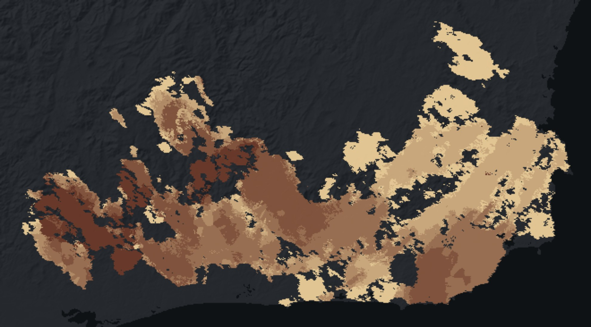
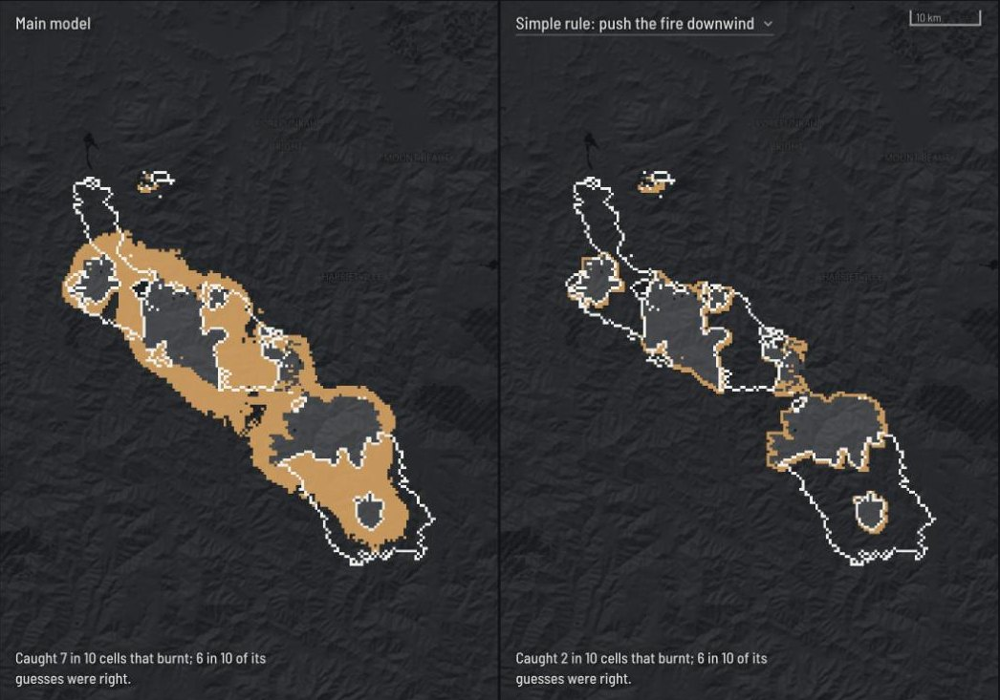

Findings
The question
If you know where a bushfire is burning today, can you predict where it will burn tomorrow? I tried to answer that for Victoria and the edges of New South Wales, one day ahead, at a resolution of 375 metres. I compared a simple rule of thumb, a physics model built from CSIRO fire-spread equations, and neural networks trained on past fires.
The data
There's no public record of where a fire was on each day, so I built one. NASA's VIIRS satellite records hot spots about 375 metres across, roughly twice a day. I used every detection from 2012 onwards, removed false alarms like steelworks and power stations that show up as "fires" year after year, and grouped detections that were close in space and time into individual fires.
Detections alone miss a lot. Smoke and cloud hide fires, and fronts move between satellite passes: for the 2019–20 Black Summer, detections caught only 49% of the burnt area in Victoria's own fire records. So I also used NASA's MODIS burned-area maps, which show what burnt each month, and gave each burnt cell the date of the nearest satellite detection, following Parks (2014). On cells where I hid the real detection, the estimated burn day was within one day 91% of the time.
Around each fire I added terrain, fuel type from CSIRO's national fuel map, how long since each place last burnt, hourly wind, temperature and humidity from the Bureau of Meteorology's BARRA reanalysis, and dryness worked out from daily rainfall. A "fire day" runs from 6 am to 6 am, so the satellite's 2 am pass counts towards the day whose fire it saw, and documented arrivals land on the right date: the fire reaches Mallacoota on 31 December.

The models
- Simple rule: assume tomorrow's fire is today's active fire, nudged downwind.
- Physics model: a grid simulation that spreads fire hour by hour with CSIRO's published spread equations for forest, grass and heath, adjusted for slope and wind.
- Plain U-Net: a neural network that takes maps of the fire, land and weather and draws a map of where it will burn next, following Huot et al. (2022).
- U-Net + physics: the same network, also given the physics model's prediction as an extra map.
- Main model: U-Net + physics without the raw weather maps, so weather reaches it only through the physics prediction.
How it was tested
The test was the 2019–20 fire season, Black Summer, with 39 fires. No model saw it during development. Every choice was made using the other 12 seasons (2013 to 2019 and 2021 to 2025): I split them into 5 groups of whole seasons, trained on 4 and scored on the fifth, and rotated. Whole seasons matter, because fires in one season share weather; mixing days from the same season into training and scoring would flatter the models.
Before touching the test season I wrote down a protocol: which models, which settings, how thresholds would be picked, which scores, how to measure uncertainty, and what I expected. Then I ran the test once. The script refuses to run a second time.
Results
The score is F1, from 0 to 1. It's high when a model catches the cells that burnt without also flagging cells that didn't. "Caught" below is the share of newly burnt cells a model predicted, and "right" is the share of its predictions that burnt.
| Model | Test F1 | 95% range | Caught | Right | F1, other 12 seasons |
|---|---|---|---|---|---|
| Main model | 0.362 | 0.330 to 0.428 | 39% | 34% | 0.318 |
| U-Net + physics | 0.341 | 0.297 to 0.390 | 45% | 28% | 0.285 |
| Plain U-Net | 0.311 | 0.266 to 0.366 | 50% | 23% | 0.276 |
| Simple rule | 0.265 | 0.252 to 0.307 | 22% | 34% | 0.217 |
| Physics model alone | 0.085 | 0.043 to 0.138 | 5% | 28% | 0.061 |
On the unseen 2019–20 season, the main model beat the simple rule by 0.097 F1 (95% range 0.072 to 0.134).
It also beat the plain U-Net, by 0.051 (0.006 to 0.083), but that needs a caveat. The plain U-Net over-predicts: it catches more and is right less. A score that doesn't depend on where the yes/no line is drawn (PR-AUC) puts the two level, 0.257 for the main model and 0.265 for the plain U-Net. So on the test season the main model's edge comes from making better-sized predictions, not from ranking cells better.

What surprised me
The network ignored the wind. To check whether the plain U-Net used wind, I rotated the wind maps by 90° and 180° while scoring. The predictions barely changed; F1 even went up slightly, by 0.002 and 0.010. From about 2,000 training examples, it never learnt wind direction from the raw maps. The physics model uses wind through its equations, and the network did use that. With the settings held the same, removing the raw weather maps and keeping physics raised the score on the other seasons from 0.285 to 0.310 (re-tuning the settings for that model then took it to 0.318, the number in the table). My reading is that the network corrects the physics model rather than relearning fire behaviour from scratch.
A random forest fell apart on new seasons. Huot et al. found a random forest beat logistic regression. On my season split it scored 0.047 F1 against 0.193 for logistic regression. I checked for bugs and found none: it fitted its training seasons well (best F1 0.33 to 0.35), but its top features were fuel and temperature, not where the fire was, so it learnt what each season looked like. Huot et al. split by random weeks, which puts the same seasons in training and testing and can hide this.
The test scored higher than cross-validation. I wrote in advance that scores might drop on 2019–20, because it was more extreme than any training season. Every model scored higher instead. Most of that season's new burn was large, continuous forest fronts close to the existing fire, the easiest case for every model. The order of the models stayed the same.
Where it fails
Long-range spread. Fire that jumps far ahead of the front isn't predicted. Between 6 and 24 km from the burnt area, every model scores 0.06 F1 or less; beyond 24 km, 0.016 or less. That's 5.8% of the 2019–20 new burn, against 0.5% in the training seasons. Embers carried kilometres ahead, and fires that make their own weather, aren't in any of these models.
Grass fires. Grass and crop fires score 0.13 to 0.14 F1 on the test season for every model, against 0.375 in forest for the main model. The training data has few grass fires, because the satellite burned-area maps miss much grass burning. Some grass fires from other seasons on the Compare page score close to zero.
The edge of the study area. The weather and fuel data stop at a fixed box around Victoria. Three New South Wales test fires ran past it: Batemans Bay and two near Braidwood. Nothing within 6 km of the edge is scored, and those fires are left off the website.
Perfect forecasts. The models use the next day's actual weather, as if the forecast were perfect. Real use would rely on forecasts and be less accurate.
What's next
- A What-if page: start a fire anywhere, choose the weather, and see what the physics and main models predict.
- Add fuel moisture from Sentinel-2 satellite data.
- Rerun the random forest with a random-week split, to measure how much that kind of split inflates scores.
Built on
- Huot, F., Hu, R. L., Goyal, N., Sankar, T., Ihme, M. and Chen, Y.-F. (2022). Next Day Wildfire Spread: a machine learning dataset to predict wildfire spreading from remote-sensing data. IEEE Transactions on Geoscience and Remote Sensing, 60, 1–13. doi:10.1109/TGRS.2022.3192974
- Parks, S. A. (2014). Mapping day-of-burning with coarse-resolution satellite fire-detection data. International Journal of Wildland Fire, 23(2), 215–223. doi:10.1071/WF13138
- Cheney, N. P., Gould, J. S., McCaw, W. L. and Anderson, W. R. (2012). Predicting fire behaviour in dry eucalypt forest in southern Australia. Forest Ecology and Management, 280, 120–131. doi:10.1016/j.foreco.2012.06.012 (Vesta, used for forest and woodland.)
- Cheney, N. P., Gould, J. S. and Catchpole, W. R. (1998). Prediction of fire spread in grasslands. International Journal of Wildland Fire, 8(1), 1–13. doi:10.1071/WF9980001 (Used for grass and crop.)
- Cruz, M. G., McCaw, W. L., Anderson, W. R. and Gould, J. S. (2013). Fire behaviour modelling in semi-arid mallee-heath shrublands of southern Australia. Environmental Modelling & Software, 40, 21–34. doi:10.1016/j.envsoft.2012.07.003 (Used for shrub and heath.)
- Cruz, M. G., Gould, J. S., Kidnie, S., Bessell, R., Nichols, D. and Slijepcevic, A. (2015). Effects of curing on grassfires: II. Effect of grass senescence on the rate of fire spread. International Journal of Wildland Fire, 24(6), 838–848. doi:10.1071/WF14146 (Used for grass curing in the grass model.)